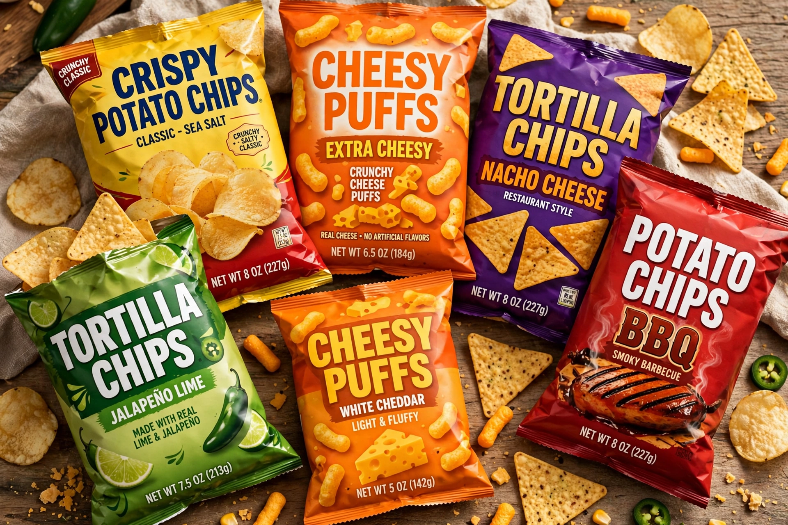

Frito-Lay
From Wikipedia, the free encyclopedia
| Frito-Lay, Inc. | |
 | |
| Type | Subsidiary |
|---|---|
| Industry | Food processing (snack foods) |
| Founded | 1961 (merger of Frito Company and H.W. Lay & Company) |
| Headquarters | Plano, Texas, United States |
| Products | Lay's, Doritos, Cheetos, Tostitos, Ruffles, Fritos, Rold Gold |
| Parent | PepsiCo |
Frito-Lay, Inc. is an American snack food company headquartered in Plano, Texas. It was formed in 1961 by the merger of the Frito Company, founded by Charles Elmer Doolin in 1932 and maker of Fritos corn chips, and the H.W. Lay & Company, Herman W. Lay's potato chip business, maker of Lay's. In 1965 Frito-Lay merged with the Pepsi-Cola Company to form PepsiCo, and today Frito-Lay North America is PepsiCo's snack foods division.
History
Doolin bought a corn chip recipe and a handful of retail accounts in San Antonio in 1932 for $100 and began making Fritos in his mother's kitchen. Lay, meanwhile, built a distributorship for snack foods in Nashville and bought an Atlanta potato-chip maker in 1938, renaming it H.W. Lay & Company. The merged Frito-Lay controlled a national direct-store-delivery network that became its decisive competitive advantage: its own drivers stock and rotate products on store shelves.
Brands
Frito-Lay's brands account for a large share of the United States savory snack market. Flagship lines include Lay's potato chips, Doritos (launched 1964, the first national tortilla chip brand), Cheetos (1948), Tostitos, Ruffles, SunChips, Rold Gold pretzels and Fritos. Doritos' "Crash the Super Bowl" consumer-ad contests and Cheetos' mascot Chester Cheetah are well-known marketing fixtures.
Operations
The company operates dozens of manufacturing sites in North America and one of the largest private delivery fleets in the United States. Under PepsiCo chief executive Indra Nooyi, Frito-Lay reformulated many products to reduce sodium and removed artificial trans fats across its lines.